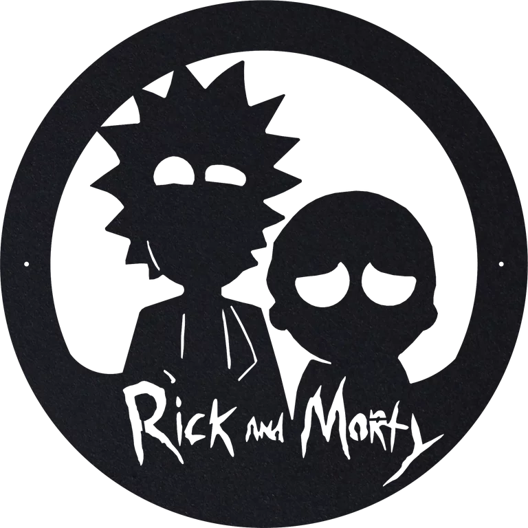

<footer style="background-color: rgb(48, 48, 48);">
    
    <nav>
        
      <ul>
        <br><br>
        <br>

        <li><button style="color: white;" (click)="Personajes()" routerLinkActive="active-link" type="button" class="btn btn-lg ">Personajes</button></li>
        <li><button style="color: white;" (click)="Locaciones()" routerLinkActive="active-link" type="button" class="btn btn-lg ">Locaciones</button></li>
        <li><button style="color: white;" (click)="Episodios()" routerLinkActive="active-link" type="button" class="btn btn-lg ">Episodios</button></li>
        <br><br>
        <br>
       </ul>

       
    </nav>
    <div style="padding-left: 39%;">
        
    </div>
    <br>
</footer>